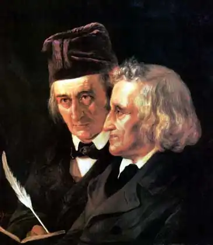

")
")

ҐРІММ, Якоб (Grimm, Jacob — 04.01.1785, м. Ханау — 20.09. 1863, Берлін) і Вільгельм (Wilhelm Grimm — 24.02.1786, Xaнау — 16.12.1859, Берлін) — німецькі філологи.
Якоб і Вільгельм народилися в місті Ханау, що у південно-східній частині землі Гессен. До цього багатого на луки й оточеного вражаючими горами краю брати зберегли любов протягом усього свого життя. Батько Якоба та Вільгельма був адвокатом, незабаром після народження братів посів місце окружного судді в невеличкому укріпленому містечку Штайнау, куди вся сім'я переїхала у 1751 р. У "Власноручному життєписі" Вільгельм Ґрімм так відізвався про батька: "Він був найвищою мірою працелюбною, порядною, ласкавою людиною, я все ще зримо бачу його кімнату, його письмовий стіл і перш за все шафи з бережно утримуваними там книжками". Роки життя в Штайнау, який віддавна стоїть на перехресті торгових шляхів, брати згадували як час "хай і нетривалого", але раю.
Матір Якоба і Вільгельма — Доротея Ґрімм за тринадцять років сімейного життя народила дев'ятьох дітей, з котрих двоє померли, а шістьох вона після смерті чоловіка повинна була виховувати сама. У сім'ї Ґрімм панувала атмосфера поваги до роду, особливої любові до вітчизни, рідного краю та релігійного послуху. В автобіографії Якоб згадує: "Ми, діти, без зайвих слів, а ділом і прикладом виховувались у строго реформаторському дусі... У мене й зараз ще таке відчуття, ніби я лише в цілковито простій, по-реформаторськи обставленій церкві можу спізнати щирий молитовний настрій, — настільки міцно прив'язана будь-яка віра до перших вражень дитинства..." У 1798 р. Якоб і Вільгельм переїхали в Кассель, з яким пов'язані шкільні роки і куди вони повернулися після закінчення Марбурзького університету. У 1802 р. Якоб, а в 1803 р. — Вільгельм, продовжуючи сімейну традицію, вступили на юридичний факультет університету в Марбурзі. В університеті брати познайомилися з Ф.К. фон Савіньї. Його лекції справили на Якоба Ґрімма сильне враження, в них приваблювала "свобода і жвавість викладу", дивовижним чином поєднані з "почуттям міри та спокою". Постійне спілкування братів із Савіньї спочатку на лекціях, а згодом вдома, у бібліотеці професора, переросло у багаторічну дружбу. Саме в бібліотеці Савіньї Якоб Ґрімм вперше побачив Бодмерівське видання німецьких мінезингерів, поетичну спадщину яких у подальшому брати ретельно вивчать. Савіньї увів братів Ґрімм і до кола романтиків, поміж котрих був автор роману "Годві" К. Брентано. У домі Брентано в Марбурзі Якоб і Вільгельм познайомились із наймолодшою сестрою Брентано — Беттіною, майбутньою дружиною А. фон Арніма. Саме Беттіні Брентано, розумній, пристрасній, по-романтичному непримиренній, буде присвячено перше видання "Дитячих і родинних казок" ("Kinder-und Hausmarchen"), опублікованих у 1812 р. Саме в Марбурзі, маленькому університетському місті, брати Ґрімм спізнали, "що таке освіта і наука, використовували благодатні можливості для розширення свого духовного світу та знайшли шлях до самих себе", — підсумовує цей період життя знаменитих казкарів А. Хекк. Закінчивши університет, восени 1805 р, Якоб Ґрімм повернувся в Кассель, куди, склавши іспити, у 1806 р. приїхав і Вільгельм. Велика сім'я Ґрімм поселилася в домі на Йоханнісштрассе 78/79, відомому цілому світу як "Дім казки братів Грімм". Після приїзду Вільгельма з Марбурґа розпочалося наукове творче співробітництво братів. У 1807 р. в "Новому літературному віснику", який вийшов у Мюнхені, з'явились перші повідомлення про стародавні німецькі поеми та середньовічний роман. А в 1808 р. Вільгельм і Якоб стали співробітниками заснованої Арнімом і Бреттіною в Гейдельберзі "Газети для відлюдників" ("Zeitung fur Einsiedler"). У 1811 p. вийшла друком і перша книга Якоба Ґрімма "Про давньонімецький мейстерзанг" ("Uber den altdeutschen Meistergesang") і переклади Вільгельма "Давньоданські героїчні пісні" (" Altdanische Heldenlieder"). На цей час припадає і початок роботи зі збирання та підготовки до друку знаменитих казок. У 1812 р. був надрукований перший том "Дитячих і родинних казок", тираж яких склав 900 примірників; третій том побачив світ у 1815 р. З 1814 р. брати Ґрімм працювали бібліотекарями в Касселі, а потім у зв'язку з переїздом у 1830 р. у Геттінген виконували там ті ж обов'язки. З 1831 по 1837 pp. Вільгельм і Якоб — професори Геттінгенського університету, в 1841 р. вони були обрані професорами Берлінського університету і стали членами Прусської академії наук. З 1841 р. наукове і творче життя братів Ґрімм пов'язане зі столицею Пруссії. Тут проводилася робота над такими фундаментальними працями, як "Історія німецької мови" ("Geschichte der deutschen Sprache", Bd. 1 — 27, 1848) і "Німецький словник" ("DeutschesWfirterbuch". Bd. 1—4), перші томи якого вийшли друком за життя братів, а останній — лише у 1861 р. Висвітлюючи в листі до Савіньї (2 квітня 1839 р.) задум словника, Вільгельм Ґрімм повідомляв: "Основна думка полягає в тому, щоб подати мову такою, якою вона за останні три століття, від Лютера до Гете, є". Але, розпочавши роботу над словником, брати прийшли до висновку про необхідність звернення до епох, які передували знаменитій лютерівській реформі. У перших томах словника, підготовлених Вільгельмом і Якобом, була представлена "природна історія окремих слів" від середини XV століття до сучасної Ґріммовської епохи. Коли 1 травня 1862 р. перший том словника побачив світ, то, за спогадами сучасників братів Ґрімм, "він був з повним правом визнаний найвеличнішою літературною справою століття". 1859 p. був роком втрат для сім'ї Ґрімм. Пішли з життя близькі їм люди — О. фон Гумбольдт, видатний учений-лінгвіст, Б. фон Арнім. 16 грудня не стало і Вільгельма Ґрімма. Похорон Вільгельма відбувся 20 грудня на кладовищі святого Матфея в Берліні. Там само був похований і Якоб Ґрімм, котрий помер 20 вересня 1863 р. Наукова і художня спадщина братів Ґрімм велика, значення їхніх праць неможливо переоцінити. Серед центральних залишаються публікації середньовічних німецьких текстів "Про давньонімецький мейстерзанґ" (1811); "Рейнеке Лис" ("Reineke Fuchs", 1834); дослідження "Німецькі героїчні сказання" ("Deutsche Heldensage", 1829), праці Я. Ґрімма "Німецька міфологія" ("Deutsche Mythologie", 1835), "Німецька граматика" ("Deutche Grammatic", 1819-1836), також збірки казок "Дитячі і родинні казки" (1812—1815); німецьких легенд "Німецькі легенди" у 2 т. ("Deutsche Sagen", 1816-1818). Безсумнівно, всесвітню славу мають "Домашні і родинні казки", найсамобутніший і один з найпопулярніших у світовій літературі творів. У першому виданні казок, опублікованому на Різдво 1812 р. у берлінському видавництві "Книготоргівля для реальних шкіл", було 86 текстів, у 2-му томі, який вийшов у 1815 р., містилося 70 текстів, в останньому прижиттєвому виданні казок було вже 210 текстів, вони й принесли братам Ґрімм всесвітню славу. Перший переклад казок був здійснений данською мовою в 1816 p., в 1821 р. — голландською, в 1823 р. — англійською, в 1830 р. — французькою. Сьогодні казки братів Ґрімм перекладені понад 100 мовами світу, в тому числі й українською. У чому ж причина всесвітньої популярності ґріммівських казок? Одна з причин полягає в тому, що брати Ґрімм зібрали, обробили і видали найтиповіші та найпопулярніші сюжети, які склали фундамент культури та літератури Європи. Спираючись на величезний матеріал, вони виявили структуру казки, заклавши основи наукового підходу до дослідження казкових сюжетів. Брати Ґрімм першими створили літературно достовірний стилістичний взірець книжної народної казки, жанр якої один із дослідників творчості братів Ґрімм визначив як "ґріммівський" (О. Науменко). Ґріммівська казка є розповіддю чи історією, яку вирізняє "лаконізм і ємнісність вираження, насиченість багатозначними іменами, зв'язаними лише дієсловами" (О. Науменко). У казках Ґрімм відсутні розгорнуті психологічні мотивування, описовість мінімальна, проголошується "буденність" дива, відсутні моралізуючі елементи. Казкам братів Ґрімм притаманна зрозумілість і простота викладу, доступність сприйняття. Цим здебільшого пояснюється і популярність "Дитячих і родинних казок". Водночас, даючи до видань своїх казок розлогі примітки, в яких були варіанти існуючих сюжетів, Якоб і Вільгельм Ґрімм заклали основи наукового підходу до публікацій пам'яток народної творчості, внесли важливий внесок у фольклористику. Вивчення натомість спадщини самих братів Ґрімм та їхніх послідовників оформилося в школу гріммознавства, центр якої розташований на кафедрі германістики Вуппертальського університету. Відновити хід роботи Якоба і Вільгельма Ґрімма над казками стало можливим після відкриття Еленберзького рукопису.Українською мовою казки братів Ґрімм перекладали О. Макарушка, Є. Попович, С. Сакидон, В. Лазня, Г. Захарчук, Є. Кротевич, П. Кондель, Ф. Новицький, І. Груба, О. Іваненко та ін. Л. Дудова